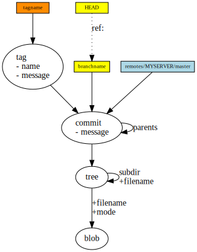
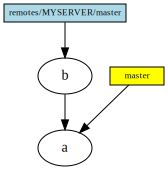
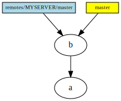
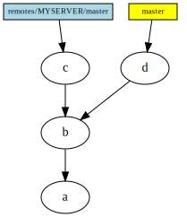
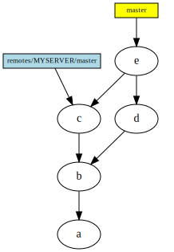
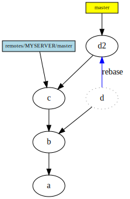
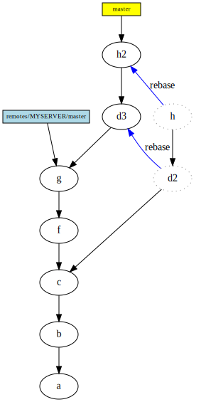
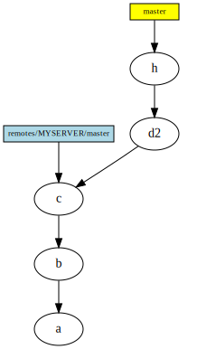

git note
Git for Computer Scientists
- http://eagain.net/articles/git-for-computer-scientists/
每次commit后形成一个新的commit节点，节点是git仓库随时间变化的一个个快照(snapshot)，而HEAD节点则是随便移动的，workingdir和index的现状保存在HEAD节点中， 而HEAD指向一个特殊的分支节点，这个分支节点一直指向最新的commit节点

对于不同的分支节点合并， 合并使用merge
对于冲突: 当然，也存在极少数的情况，你必须自己手动地告诉 Git 该怎么做。最为常见的就是大家都改动了同一个文件。即便在这种情况下，Git 还是有可能自动地发现并解决掉这些冲突。但是，如果两个人同时更改了同一个文件的同一行代码，或者一个人改动了那些被另一个人删除了的代码，Git 就不能简单地确定到底谁的改动才是正确的。这时 Git 会把这些地方标记为一个冲突，你必须首先解决掉这些冲突，然后再继续你的工作。
如果一个分支节点master所指向的commit节点是另一个分支节点dev所指向的commit节点的直接祖先
则分支节点master可以直接merge(移动分支节点master到分支节点dev所指向的commit节点(fastforward)
- ------>
创建新commit节点，其祖先节点分别是原分支节点master与dev所指向的commit节点，注意分支节点master移动dev不移动, 即分支节点dev保持原状, 但此时若在分支节点dev上merge master则会导致fastward
如不是， 则merge(可能需要解决冲突，冲突文件会被直接标记)会commit一个新节点，此时冲突得到解决，且新commit节点其祖先节点分别是分支节点master与dev所指向的commit节点，注意分支节点A移动B不移动, 即分支节点dev保持原状, 但此时若在分支节点dev上merge master则会导致fastward， 和上面的情况类似
- ---------->
在本质上, fastward既是移动分支节点从原commit节点沿着路径一直到最新的commit子节点！
消除冗余commit节点，使用rebase
rebase不同于merge， merge在创建新节点的方式融合两个分支时， 新的commit节点拥有两个parent节点， 而使用rebase在融合后的新的commit节点只有一个parent节点， 当前分支的commit节点在log中被删除，留下的是rebase对象分支的commit节点
- 
多次commit的情况也能解决
- 
使用gc能将没有父节点的commit节点删除
- 
对于同一分支，如果存在远程仓库与本地仓库处于同步状态，即存在一个另一个分支节点也(一般称作origin)指向当前最新的commit节点
- 一旦远程仓库commit新节点， 远程仓库领先于本地仓库节点， 则需要使用fetch命令将远程仓库的内容下载到本地仓库， 然后使用merge合并，两者可以统一为一个命令pull(本地工作目录在未经确认的情况下就会被远程分支更新)，当存在冲突时，解决办法和merge的冲突一样
- 同理本地仓库领先与远程仓库，则需要使用push将变动一次性配置到远程仓库上，当存在冲突时，pull下远程仓库， 解决冲突， 再次push
- question： 解决冲突后push为什么成功？; answer:push会让远程分支节点直接fastforward到解决冲突后的commit节点

git note
- 使用命令
git log --graph --pretty=oneline --abbrev-commit获得图形化log
git如何忽略已经提交的文件 (.gitignore文件无效)
- 删除track的文件 (已经commit的文件)
- 'git rm' 要忽略的文件
- git commit -a -m "删除不需要的文件"
- 在.gitignore文件中添加忽略规则
- 在.gitignore文件中添加ignore条目, 如: some/path/some-file.ext
- 提交.gitignore文件: git commit -a -m "添加ignore规则"
- 推送到远程仓库是ignore规则对于其他开发者也能生效: git push [remote]
- 删除track的文件 (已经commit的文件)
移除远程库，
git remote remove origin- 将你的git协议由https变为ssh,
git remote set-url origin git@github.com:JackTroy/JackTroy.github.io.git